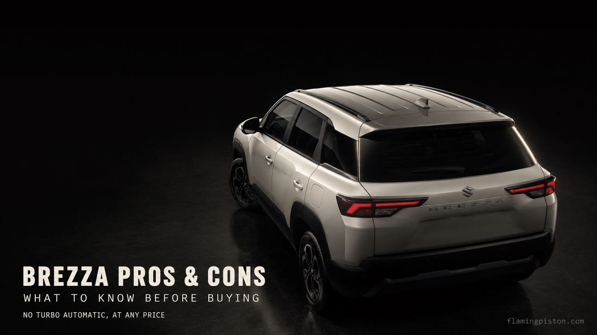

Maruti Brezza Pros & Cons: Things to Know Before Buying

Image: FlamingPiston
After covering the Brezza's price, engines, variants, mileage, safety, and practicality across this whole series, here's the honest summary: what genuinely stands out, and the real trade-offs that most sales pitches leave out.
The One Trade-off That Shapes Everything Else
You cannot get the turbo engine with an automatic gearbox, at any trim, at any price. That single constraint, covered across our Turbo vs 1.5 Petrol guide and Automatic guide, is the thing to internalise before anything else on this list, because it rules out the most appealing combination on paper.
Pros: What the Brezza Genuinely Gets Right
- A real automatic, not an AMT. The 6-speed torque-converter unit paired with the 1.5-litre petrol is a genuine automatic, the same broad category used in far pricier cars, not a clutch-based AMT pretending to be one.
- CNG that doesn't cost you boot space. The underbody-mounted tank preserves the full 328-litre boot, unlike most factory CNG SUVs in this segment.
- A genuinely strong safety score. 5-star Bharat NCAP, with 30.41/32 on Adult Occupant Protection and 43/49 on Child Occupant Protection, well clear of the 5-star thresholds, not a borderline pass.
- Low, predictable running costs. Independent estimates put 5-year service costs around ₹25,000-35,000, backed by Maruti's dense dealer network and simple, well-understood engines.
- Genuine three-across shoulder room. The Brezza's wider body gives it an edge for carrying three rear passengers compared to some narrower rivals.
Cons: The Real Trade-offs
- No automatic turbo, at any trim. The 1.0-litre turbo is manual-only across the entire range, a hard constraint, not a missing option on lower trims only.
- Firm ride, and some top-heavy cornering feel. Published road tests describe the suspension as erring firm, with the car feeling somewhat top-heavy through corners and steering that stays fairly disconnected from what the front wheels are doing.
- No spare tyre, anywhere in the range. A genuine practicality gap for anyone planning serious highway distance, worth knowing before you assume it's included like most cars in this segment.
- No digital driver's display or powered seats, at any trim. Rivals at similar price points increasingly offer both; the Brezza's cabin tech, while improved with the new 10.1-inch touchscreen, stops short of these two items across the whole range.
- Rear legroom is decent, not class-leading. The segment leader offers a longer rear seat base and more outright knee room, even with near-identical exterior dimensions.
Who the Brezza Suits
Buyers who want a dependable, low-running-cost family SUV, value Maruti's service network and resale reputation, and are willing to trade outright ride comfort and cabin tech for practicality and running cost. It particularly suits anyone who's already decided they want either a genuine automatic or CNG specifically, since the Brezza executes both better than a lot of the segment. It suits less well anyone chasing a turbo-plus-automatic combination, a genuinely plush ride, or the absolute latest in cabin tech, all of which have stronger answers elsewhere in this price bracket.
Our Final Take
Across this whole series, the pattern that emerges is consistency: the Brezza is a car of clear, honest trade-offs rather than a car trying to be everything at once. It doesn't chase the flashiest spec sheet, it wins on the fundamentals that matter for daily ownership: real fuel-and-gearbox flexibility, strong safety numbers, and low running costs. If those fundamentals match what you actually need, the constraints on this list are easy to live with. If a smooth turbo-automatic or the most advanced cabin tech in the segment is non-negotiable for you, this isn't the car for that particular list. For the complete picture, start with our full Brezza review, or go straight to whichever specific question from this list matters most to you across the rest of this series.
FAQs
What is the biggest drawback of the Maruti Brezza?
No automatic gearbox with the turbo engine, at any trim. If you want turbo performance and a self-shifting gearbox in the same car, the Brezza can't give you that combination.
Does the Brezza have a spare tyre?
No, per published road-test coverage, the Brezza doesn't include a spare tyre anywhere in the range, a genuine practicality gap worth knowing about before a long highway trip.
Is the Brezza's ride quality good?
It's on the firmer side. Published road tests describe the suspension as erring firm and the car feeling somewhat top-heavy through corners, a trade-off for its tall, upright SUV stance.
What are the Brezza's biggest strengths?
A genuine 6-speed torque-converter automatic (not an AMT), a factory CNG option that doesn't sacrifice boot space, a 5-star Bharat NCAP rating, and Maruti's dense service network and low running costs.
Sources: Autocar India published road-test reporting; Bharat NCAP; Maruti Suzuki official specifications; FlamingPiston's own Brezza review series.
More in the Brezza series: 2026 Maruti Brezza Review · Real-World Mileage · Variants Explained · Automatic Review · vs Tata Nexon · vs Fronx · Maintenance Cost · Turbo vs 1.5 Petrol · CNG Review · Boot Space & Practicality · Safety & Bharat NCAP
More in the Brezza series: Full Review · Real-World Mileage · Variants Explained · Automatic Review · CNG Review · Turbo vs 1.5 Petrol · Maintenance Cost · Boot Space · Safety & NCAP · vs Tata Nexon · vs Fronx